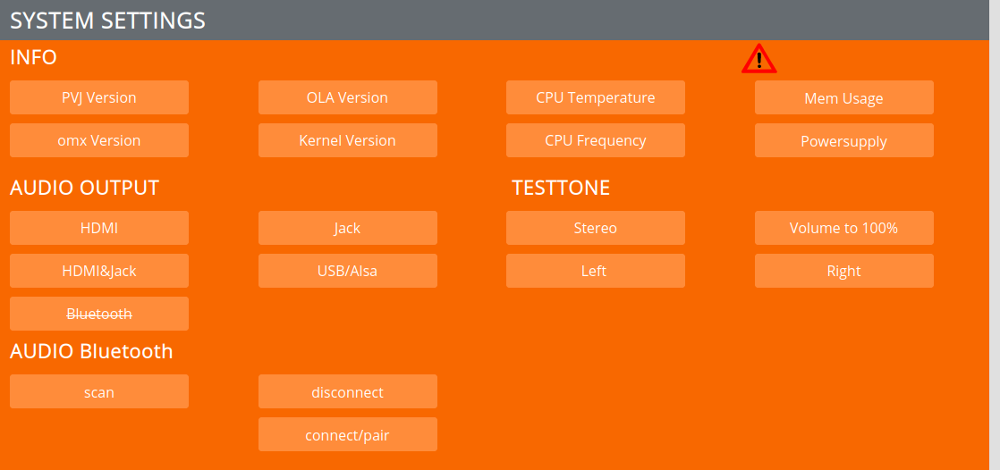
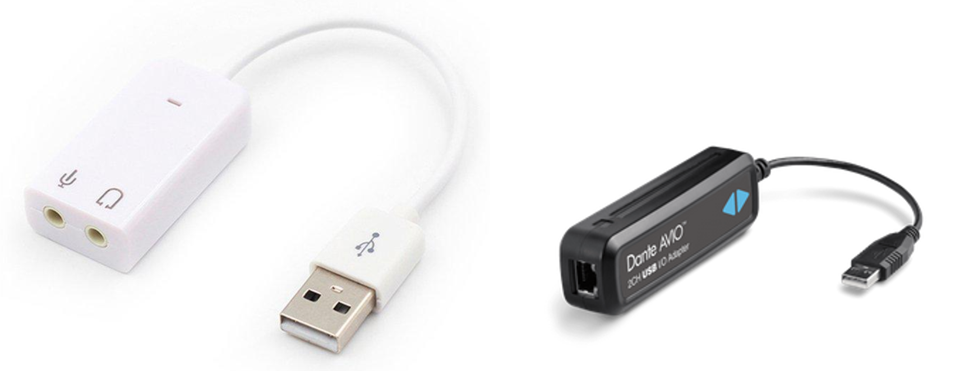
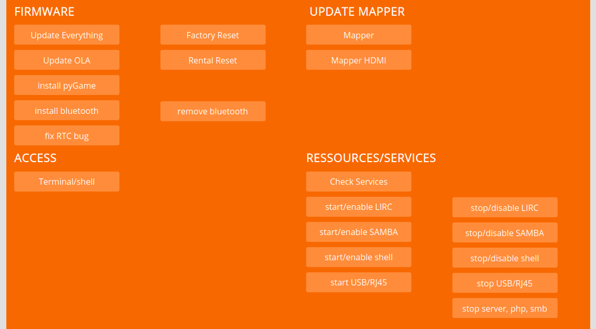

SYSTEM SETTINGS¶
INFO¶
Get some info about the system. PVJ Version see which version you have, very useful when opening an issue. CPU Temperature shows actual temp in °C of the CPU, if its over 70°, it will throttle the CPU. Powersupply checks if we get enough current.
AUDIO OUTPUT¶
Select where you want the audio to be played. Limit of compression is: 160kbit/s (you can experiment with higher values, but then decrease the video bitrate).
If the quality from mini Jack plug does not make you happy, use audio over HDMI with an extender or you attach an USB soundcard, keep in mind that when they are big, to provide them power from an external powersource.
Im planning to integrate audio over Bluetooth soon… its not working right now..
AUDIO Bluetooth¶
This is currently a work in progress.
First you need to “install bluetooth” under FIRMWARE.
Then you can click “scan” to show the mac address of a device which you can connect.
Disconnect and pair does not work yet, I am on it but its quite complicated :-)
FIRMWARE¶
Is for updating stuff.
Update All is used to update via zipfile:
see video tutorial: https://video.pocketvj.com/AVideo/video/7/pocketvj-exhibition-update
Always read the release notes, sometimes you need to do this 2x to get all new features.
or: https://video.pocketvj.com/AVideo/video/6/pocketvj-exhibition-alternative-update
After alternative update, go and click Update All, this will add some new stuff in the background.
For precise DMX recording/playback make sure to have the latest OLA 0.10.7 installed!
If you have PVJ Version 4.0.6 or older, you need to install pygame to use Countdown and Webcam preview and also Bluetooth for beacon stuff.
FACTORY RESET¶
Resets to factory state.
RENTAL RESET¶
Resets to factory state, removes all movies and images and copys the standard testvideos to the folder.
ACCESS¶
Access the terminal, used for remote support via chat, if not working, turn on under SERVICES
RESSOURCS/SERVICES¶
Check Services check what services are running in the background (you can scroll the window!)
LIRCD = on/off ==> is used to use infrared diodes to remote control devices, default: off
SAMBA = on/off ==> is used to upload files via smb:// default: off
SHELL = on/off ==> is used to open a terminal within the webbrowser, default: on
OLAD dmx = on/off ==> is used to use dmx/artnet, default: off
GPU = on/off ==> disables the grafic chip, useful when using headless, default: on
BLUETOOTH = installed /not installed
WIFI = enabled/disabled ==> default: on
INTERNET = online/offline
REMOTE ACCESS = on/off ==> default: off
POWER = Power is good / Power is bad ==> this is great to check your power source, not enough power causes issues with wifi and mapping
start/enable ==> starts and enables the service, will also be enabled after reboot
stop/disable ==> stops and disables the service, also disabled after reboot
start USB/RJ45 ==> not implemented right now…
stop USB/RJ45 ==> will powerdown RJ45 and USB ports, used to save energy consumption, will be on again after reboot… tell me your voltage measure results and I will make this even better
stop server, php, smb ==> stop the webserver so you are not able to access the control panel anymore, will be on again after reboot…tell me your voltage measure results and I will make this even better